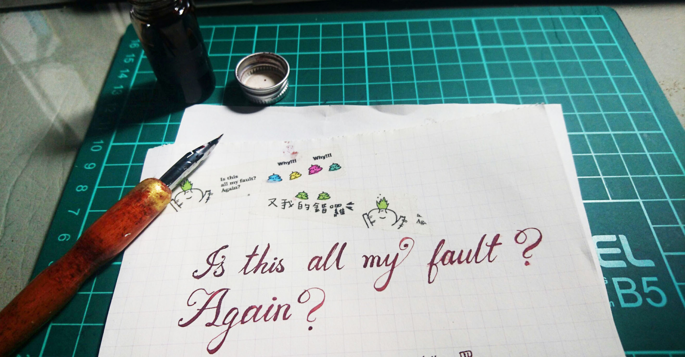
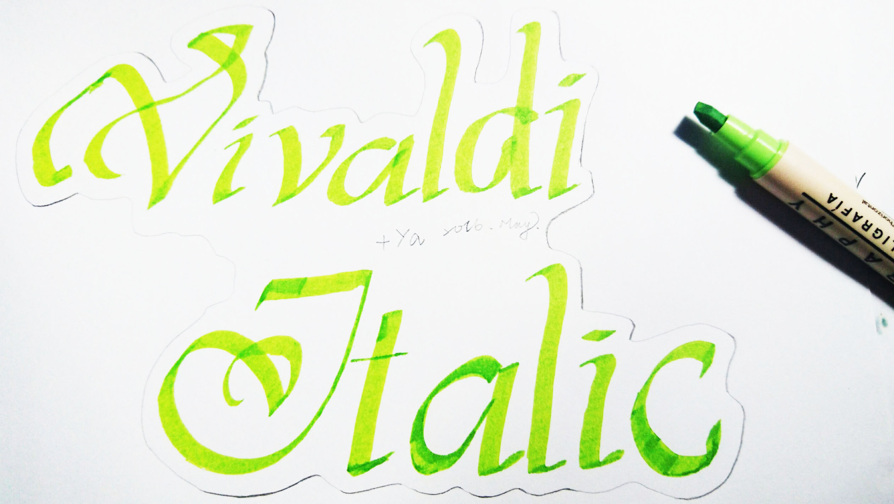

如何使用
關於沾水筆的握筆姿勢其實跟刻章的握刀姿勢很像，都是小時候學習的所謂「正確」握筆姿勢：拇指、食指、中指平均支撐住筆桿，讓筆身斜靠在虎口上，如此一來筆身才會和紙張呈現最適合的45度角。
太直的角度會讓墨水出不來，無法流暢書寫造成筆尖一直在刮紙，除了傷害筆尖外，寫起來的手感也很差。
正確的握筆姿勢，手握在靠近筆頭的地方但不能太過下面或上面，筆尖與紙面呈現約45度角的狀態，此時筆桿是溫柔的靠在手上的，盡量放鬆手腕不要太用力。這樣筆尖才能夠有盡可能大的活動範圍，也是流暢書寫的第一步。
沾水筆最迷人的地方就是它的書寫粗細有致，第一行是完全沒有用力在紙上畫出短短的線條；第二行則是手指對筆桿施力下壓，讓較多的墨水從筆尖流出，製造出較粗的筆畫。再來也可以畫畫波浪形，在筆畫往下時用力就是最基本的書寫原則。還有畫圈圈也是很實際的練習，英文字母裡有很多圓弧形線條，開始書寫後就會發現弧形線條要寫得漂亮不是那麼容易，所以還是得要多練習才行呀！
使用注意事項
沾水筆尖、筆桿都建議盡量不要碰水，因為很容易生鏽，尤其是在氣候潮濕的台灣，保持乾燥是最基本的條件。寫完後，立即用乾的紙巾擦拭即可，實在擦不乾淨，也沒關係，如果不能寫了就直接拋棄，畢竟他很便宜。
但是生鏽也多少會影響筆尖的使用壽命，請好好愛護保養你的筆尖~~~
沾水筆用紙
盡量找磅數較高的紙來寫(例如90~100磅)，才不會暈墨或毛邊，只還是要試寫過才知道好不好、色彩呈現如何。
新筆尖使用方法
有些人買了沾水筆尖回來用了會很生氣，覺得為什麼存墨量很不夠，有時候根本寫不玩一個字
原因是因為新的筆尖有上蠟，有兩個方式：
- 第一個方式：在使用前請把筆尖裝在你的筆桿上，然後用打火機燒筆尖(儲墨的那一面)，大概3~5秒，不用太久，記得要燒到那個洞洞那邊，不是只有筆尖的地方喔~把蠟燒掉之後就可以得到一枚好用的筆尖囉 :D
- 第二個方式：用牙膏洗筆尖，使用棉花棒沾少許牙膏把蠟洗掉，再擦乾，切記一定要擦乾，不然會生鏽。
練習字體
關於字體的部分，如果真的不知道怎麼寫才漂亮，Pinterest是個好地方，搜尋modern calligraphy或calligraphy就有很多字體可以參考了。